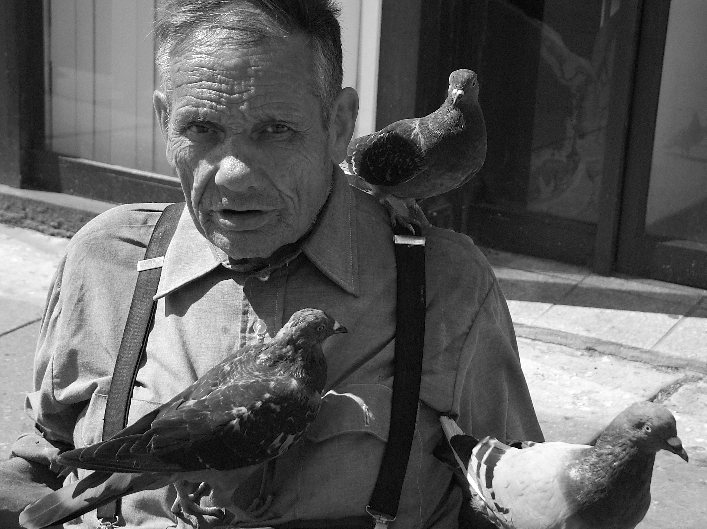
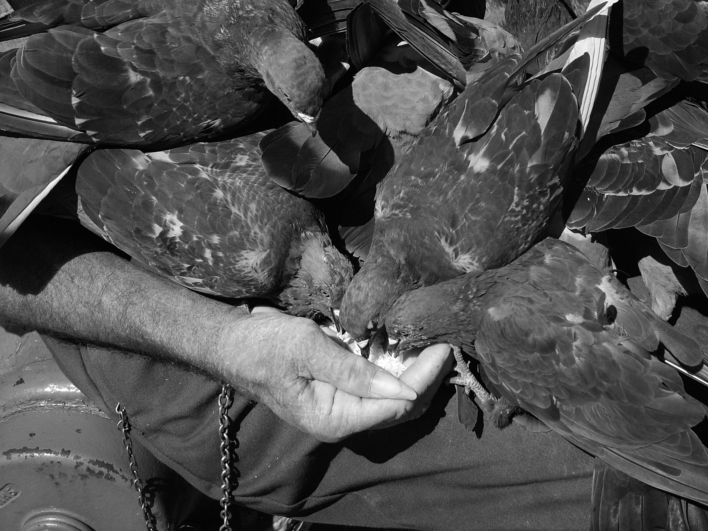

joe.
From my apartment window, I saw Joe walking across the street. I ran out the door and caught up with him in the alley. His limp made him easy to overtake.
I asked about his foot, which no longer had a cast. "It's gotten better" he said, but added "No cartilage. No cartilage"
We continued on till we reached Western and he sat on his usual hydrant. The pigeons flocked as soon as he pulled the food from his pocket.
Joe told me he had been sitting here in Lincoln Square for six years. Before that he used to sit with pigeons over near Cabrini Green, where he used to own a newspaper stand. He worked there for fifty years and now he is retired.
He asked me if I though the pigeons were afraid of him at all, if they were worried he would do the wrong thing to them.
I told him it was obvious they weren't afraid at all.
I then told him how I'd started noticing pigeons killed all over the city and how it made me think of him and made me sad to think that no one else cared for the pigeons right to live the way that he did.
"They just kept moving and scurrying", he said "trying to keep alive, just like people do."
"They get the same respect?", he asked
I said I didn't know.
As I was leaving, Joe reminded me I didn't bring him the last photos I had taken. "Get off your ass this time." he said.

These photos and this conversation took place in September of 2004. I left Chicago soon after and I didn't manage to bring Joe the photos. In December of 2007, Joe was killed by a car pulling out of a parking lot. I think of Joe often and regret my failure to live up to his simple request.
This brief essay is my attempt to repay his kindness in some small way.